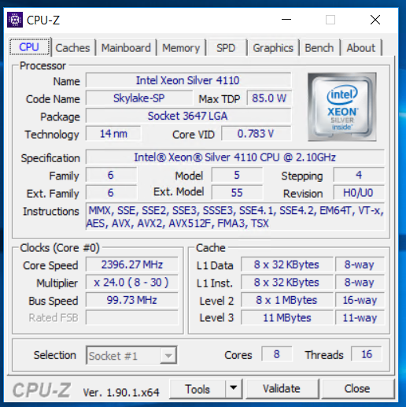

CFuzz: A Custom Fuzzer Written in C
CFuzz v0.40 - A modern fuzzer developed completely in C, designed for Windows application security testing with powerful mutation engines and detailed logging capabilities.
Overview
CFuzz is a comprehensive fuzzing tool written entirely in C, designed specifically for Windows application security testing. The tool implements a brute-force approach with multiple mutation strategies and includes a complete ecosystem of helper utilities for automation and monitoring.
What Makes CFuzz Sophisticated
What Makes CFuzz Less Sophisticated
CFuzz represents a practical, well-engineered approach to fuzzing that prioritizes reliability and real-world effectiveness over academic sophistication. While it lacks some advanced features found in modern research fuzzers, its comprehensive automation ecosystem and proven track record make it a valuable tool for Windows application security testing.
Real-World Impact: CFuzz was instrumental in discovering CVE-2019-17183, a critical vulnerability affecting Foxit PDF Reader, demonstrating its effectiveness in real-world security research.
Development Timeline and Context
CFuzz was developed around 2019 during a period when automated vulnerability discovery was gaining significant importance in cybersecurity research. The tool represents a comprehensive approach to fuzzing technology, combining traditional brute-force methodologies with modern automation and monitoring capabilities.
The development period coincided with a growing need for sophisticated fuzzing tools that could handle complex Windows applications while providing comprehensive monitoring and automation capabilities. CFuzz was designed as a research-grade tool rather than a simple proof-of-concept, incorporating advanced features like hardware-aware performance optimization, multi-threading support, and extensive logging systems.
Tool Architecture
Core Components
Key Data Structures
struct fuzzinput {
unsigned char *title;
int previous_crash_filename_start;
unsigned long long previous_crashed_file_size;
unsigned long long total_seeds;
unsigned long long total_seeds_completed;
unsigned long long seeds_already_completed;
unsigned long long total_seeds_pending;
unsigned long int seed_max_size_allowed_in_bytes;
DWORD seed_size;
unsigned char *target_application_filename;
unsigned char *target_application_version;
unsigned char *seed_content;
unsigned char *seed_filename;
unsigned char *seed_fileextension;
unsigned char *seed_fileextension_wildcard;
unsigned char *seed_filetype;
unsigned int mutation_type;
unsigned int mutation_start_offset;
unsigned int mutation_end_offset;
unsigned int mutation_length;
unsigned int mutation_location;
unsigned int mutation_hexjump;
unsigned long long overall_saplings_created;
unsigned long long overall_saplings_pending;
unsigned long long overall_saplings_total;
unsigned long long saplings_total;
unsigned long long saplings_created;
unsigned long long saplings_pending;
unsigned long long process_clean_exits;
unsigned long long process_safe_exits;
unsigned long long process_non_safe_exits;
unsigned int process_lowmem;
unsigned long int waitforsingleobject_seconds;
unsigned long int process_cooling_seconds;
unsigned int initial_sleep_time;
unsigned int max_threads;
unsigned char *chamber_folder_name;
enum mutation_models mutation_model;
};
Mutation Engine
CFuzz implements multiple mutation strategies, each designed for different testing scenarios and performance requirements:
Storm Mutations (1-3)
- Type 1: Byte (storm)
- Type 2: Word (storm)
- Type 3: Dword (storm)
High-intensity mutation with comprehensive byte coverage
Deterministic Mutations (4-6)
- Type 4: Byte (deterministic)
- Type 5: Word (deterministic)
- Type 6: Dword (deterministic)
Predictable mutation patterns for reproducible testing
Minimalistic Mutations (7-9)
- Type 7: Byte (minimalistic)
- Type 8: Word (minimalistic)
- Type 9: Dword (minimalistic)
Reduced mutation intensity for focused testing
Bare Minimal Mutations (10-12)
- Type 10: Byte (bare minimal)
- Type 11: Word (bare minimal)
- Type 12: Dword (bare minimal)
Minimal mutation with jump bytes for efficiency
Tiny Mutations (13-15)
- Type 13: Byte (tiny)
- Type 14: Word (tiny)
- Type 15: Dword (tiny)
Very small mutation increments
Microscopic Mutations (19-21)
- Type 19: Byte (microscopic)
- Type 20: Word (microscopic)
- Type 21: Dword (microscopic)
Ultra-fine granularity mutations
Deep Dive: Mutation Engine
The mutation engine is the heart of CFuzz. Each mutation strategy is implemented as a dedicated function in mutation.c. Below are annotated code snippets and explanations for the most important mutation types:
Storm Mutation (Byte)
int mutate_bytes_storm(struct fuzzinput *afi, struct fuzzoutput *afo) {
// ...
for(afi->mutation_location = afi->mutation_start_offset; afi->mutation_location <= afi->mutation_end_offset; afi->mutation_location++) {
for(mutation_values = 0; mutation_values < 256; mutation_values+=afi->mutation_hexjump) {
// Mutate a single byte at mutation_location
mcontent[afi->mutation_location] = mutation_values;
// Write mutated file and trigger target
WriteFile(out, mcontent, afi->seed_size, &bytes, NULL);
trigger(afr, afo);
}
// Restore original byte after mutation
mcontent[afi->mutation_location] = afi->seed_content[afi->mutation_location];
}
// ...
}
Explanation: This function iterates over each byte in the mutation range, replacing it with all possible values (0-255), and triggers the target application for each mutated file. This brute-force approach is highly effective for uncovering edge-case vulnerabilities.
Deterministic Mutation (Word)
int mutate_bytes_lightning(struct fuzzinput *afi, struct fuzzoutput *afo) {
// Similar structure to storm, but mutates 2 bytes (word) at a time
// and uses deterministic patterns for reproducibility.
}
Explanation: Deterministic mutations use fixed patterns and multi-byte changes, making it easier to reproduce and analyze discovered crashes.
Minimalistic & Tiny Mutations
int mutate_bytes_minimalistic(struct fuzzinput *afi, struct fuzzoutput *afo) {
// Mutates with reduced intensity, skipping many values for speed.
}
int mutate_bytes_tiny(struct fuzzinput *afi, struct fuzzoutput *afo) {
// Uses very small increments and jump bytes for efficiency.
}
Explanation: These strategies are useful for large files or when targeting performance-sensitive applications, as they reduce the number of test cases while still providing coverage.
Microscopic Mutation
int mutate_bytes_microscopic(struct fuzzinput *afi, struct fuzzoutput *afo) {
// Ultra-fine granularity, mutating at the smallest possible increments.
}
Explanation: This is used for highly targeted fuzzing, such as when a specific vulnerability is suspected in a narrow byte range.
Command Line Interface
cfuzz.exe <title> <target app name> <target app version> <seed file type> <seed file max size in bytes> <seed file extension> <mutation type> <mutation start offset> <mutation end offset> <waitforsingleobject milliseconds> <process_cooling_milliseconds> <initial sleep minutes> <max threads> <chamber_folder_name>
Parameter Details
- title: Descriptive name for the fuzzing session
- target app name: Executable name of the target application
- target app version: Version string of the target application
- seed file type: Type of input files (e.g., "PNG", "PDF")
- seed file max size: Maximum allowed size for seed files in bytes
- seed file extension: File extension for generated test cases
- mutation type: Mutation strategy (1-21)
- mutation start/end offset: Byte range for mutations
- waitforsingleobject milliseconds: Timeout for process execution
- process_cooling_milliseconds: Cooling period between tests
- initial sleep minutes: Initial delay before starting
- max threads: Maximum concurrent test threads
- chamber_folder_name: Directory containing seed files
Helper Utilities and Automation Strategy
CFuzz is designed as a comprehensive fuzzing ecosystem with specialized helper utilities and automation strategies. The tool follows a sophisticated approach where CFuzz.exe is not triggered directly, but through carefully orchestrated batch file strategies.
Core Helper Utilities
Crash Testing Utility
The crashafterseconds utility is a critical component for validating CFuzz's crash detection capabilities:
#include <stdio.h>
#include <stdlib.h>
int main(int argc, unsigned char *argv[]) {
unsigned int seconds = unsigned_char_to_unsigned_int(argv[1]);
Sleep(seconds * 1000);
__asm__ (
"push $0x41414141;"
"ret;"
);
return 1;
}
Purpose: This utility allows researchers to manually trigger crashes after a specified number of seconds, enabling validation that CFuzz correctly detects and reports application crashes. The assembly instruction push $0x41414141; ret; forces a controlled crash for testing purposes.
File Management and Cleanup
CFuzz implements a sophisticated file management system with dedicated directories:
- Chamber Folders: Contain seed files for mutation
- Forest Folders: Store generated mutated test cases
- Log Directories: Maintain detailed execution logs
@REM Purge utilities for different file types
purgebmp.bat
purgejpg.bat
purgepng.bat
purgepdf.bat
purgezip.bat
purgemp3.bat
The purgefiles utility automatically cleans up mutated files in the forest folder, preventing disk space issues during extended fuzzing sessions.
Remote Monitoring and Reporting
CFuzz includes advanced remote monitoring capabilities through the sendlog utility:
# sendlog_0.3.py - Remote monitoring via email
import urllib.request
import smtplib
from email.mime.text import MIMEText
from email.mime.multipart import MIMEMultipart
gmail_user = 'your_email@gmail.com'
gmail_password = 'your_app_password'
url1 = 'http://172.16.10.193:8000/logs10/screen.log'
subject1 = 'python pypdf2.py 10240-11264 bare minimalistic log'
response1 = urllib.request.urlopen(url1)
body1 = response1.read()
msg = MIMEMultipart()
msg['Subject'] = subject1
msg['From'] = gmail_user
msg['To'] = to
msg.attach(MIMEText(body1, 'plain', 'utf-16'))
server = smtplib.SMTP_SSL('smtp.gmail.com', 465)
server.login(gmail_user, gmail_password)
server.sendmail(gmail_user, to, text)
server.quit()
Remote Monitoring Strategy: The sendlog utility captures CFuzz session logs and sends periodic email reports, enabling researchers to monitor fuzzing sessions remotely from anywhere in the world.
Real Email Reports from CFuzz Sessions
Below are actual email reports sent by the sendlog utility during CFuzz fuzzing sessions:
Email report from CFuzz fuzzing session targeting WinRAR application
Email report from CFuzz fuzzing session targeting Sumatra PDF Reader
These email reports provide real-time updates on fuzzing progress, including:
- Progress metrics: Completion percentage and remaining work
- Performance data: Execution rate and system resource usage
- Crash detection: Any discovered vulnerabilities or crashes
- Session status: Current mutation strategy and target information
Web-Based Monitoring Interface
For extensive and exhaustive fuzzing sessions, CFuzz implements a web-based monitoring solution:
@REM webserver.bat - Python-based log hosting
@ipconfig
@python -m http.server
Purpose: Since fuzzing sessions can be extensive and exhaustive, creating an active UI is challenging. CFuzz writes running metrics to log files and uses a Python-based web server to host these logs, allowing monitoring from different machines on the network.
Batch File Automation Strategy
CFuzz is never triggered directly. Instead, it follows a sophisticated batch file strategy for automation:
@REM _000_256.bat - Example batch automation
@REM argv[0] - cfuzz.exe
@REM argv[1] - < title >
@REM argv[2] - < target app name >
@REM argv[3] - < target app version >
@REM argv[4] - < seed file type >
@REM argv[5] - < seed file max size in bytes >
@REM argv[6] - < seed file extension >
@REM argv[7] - < mutation type >
@REM argv[8] - < mutation start offset >
@REM argv[9] - < mutation end offset >
@REM argv[10] - < waitforsingleobject milliseconds >
@REM argv[11] - < process_cooling_milliseconds >
@REM argv[12] - < initial sleep minutes >
@REM argv[13] - < max threads >
@REM argv[14] - < chamber_folder_name >
cfuzz.exe "iview" "i_view32.exe" "1.1" "PNG" 95000 "png" "10" "1" "3" "6" "2" "0" "64" "chamber"
Thread Optimization and Timing Analysis
The findwaittime utility helps optimize thread counts and timing parameters:
@REM findwaittime.bat - Thread optimization
@echo off
set threads=256
:loop
sleep 3
findwaittime.exe "%threads%" 4 1
set /a threads = %threads% + 256
if %threads% gtr 1024 goto end
goto :loop
:end
pause
pause
pause
Purpose: This utility systematically tests different thread counts (256, 512, 768, 1024) to find optimal performance parameters for the target system and application.
Advanced Automation Workflow
The complete CFuzz automation workflow follows this pattern:
- Setup Phase: Prepare chamber folders with seed files
- Configuration: Create batch files with appropriate parameters
- Execution: Run CFuzz through batch automation
- Monitoring: Use web interface and email reporting
- Cleanup: Automated file purging and log management
- Analysis: Review crash reports and performance metrics
Key Insight: This automation strategy allows CFuzz to run extensive, multi-day fuzzing sessions with minimal manual intervention, while providing comprehensive monitoring and reporting capabilities.
Real-World Usage Example
Here's an example of CFuzz being used to test IrfanView image viewer:
cfuzz.exe "iview" "i_view32.exe" "1.1" "PNG" 95000 "png" "10" "1" "3" "6" "2" "0" "64" "chamber"
Execution Output
┌───── CFuzz v0.37 ─────────────────────────────────┐
│ OVER OVER OVER OVER OVER OVER OVER OVER OVER │
│ OVER OVER OVER OVER OVER OVER OVER OVER OVER │
│ OVER OVER OVER OVER OVER OVER OVER OVER OVER │
│ OVER OVER OVER OVER OVER OVER OVER OVER OVER │
│ OVER OVER OVER OVER OVER OVER OVER OVER OVER │
├── exits ──────────────────────────────────────────┤
│ crashes: 0 │
├── progress ───────────────────────────────────────┤
│ overall completed: 100.00 % │
│ overall to go: 0.00 % │
│ cur completed: 100.00 % │
│ cur to go: 0.00 % │
├── saplings (current) ───┬──── saplings (overall) ─┤
│ total: 48 │ total: 48 │
│ created: 48 │ created: 48 │
│ pending: 0 │ pending: 0 │
├── process ──────────────┴─────────────────────────┤
│ overall triggers: 48 │
│ current triggers: 48 │
│ max threads: 64 │
│ wait seconds: 6 │
├── seed info ──────────────┬─────────── mutation ──┤
│ seeds: 1 │ start: 1 │
│ completed: 1 │ end: 3 │
│ pending: 0 │ location: 3 │
│ length: 304 │ len: 00003, type: 10 │
├── performance ────────────┴───────────────────────┤
│ time since running: 0 d, 0 h, 0 m │
│ total RAM: 16275 │
│ total RAM free: 7900 │
│ no. of processors: 4 │
│ exec / second: 4 │
├── file & app ─────────────────────────────────────┤
│ app name: i_view32.exe │
│ app version: 1.1 │
└───────────────────────────────────────────────────┘
Step-by-Step Tutorial: Setting Up and Running CFuzz
This comprehensive tutorial walks through the complete process of setting up, configuring, and running a CFuzz fuzzing session, from initial preparation to crash analysis.
Phase 1: Environment Setup
Step 1: Directory Structure Preparation
# Create the required directory structure
mkdir chamber
mkdir forest
mkdir logs10
mkdir utils
# Copy CFuzz executable and utilities
copy cfuzz.exe .
copy utils\*.* utils\
Step 2: Seed File Preparation
Place your seed files in the chamber directory. For this example, we'll use PNG files for testing IrfanView:
# Example: Copy PNG seed files to chamber
copy *.png chamber\
# Verify seed files
dir chamber\*.png
Phase 2: Configuration and Parameter Selection
Step 3: Understanding Parameter Selection
Selecting the right parameters is crucial for effective fuzzing:
- Mutation Type Selection: Choose based on target characteristics
- Type 1-3 (Storm): For comprehensive testing
- Type 10-12 (Bare Minimal): For large files or performance-sensitive targets
- Type 19-21 (Microscopic): For targeted vulnerability research
- Offset Range: Determine based on file format analysis
- Header fields: Usually bytes 0-100
- Data sections: Varies by file format
- Footer fields: End of file
- Thread Count: Balance between performance and system stability
Step 4: Creating the Batch Automation Script
@REM Create _000_256.bat for IrfanView testing
@echo off
echo Starting CFuzz session for IrfanView PNG testing...
cfuzz.exe "iview" "i_view32.exe" "1.1" "PNG" 95000 "png" "10" "1" "3" "6" "2" "0" "64" "chamber"
echo CFuzz session completed.
pause
Phase 3: Execution and Monitoring
Step 5: Starting the Fuzzing Session
# Execute the batch file
_000_256.bat
# Monitor the session in real-time
# The screen.log file will be updated continuously
Step 6: Setting Up Remote Monitoring
For long-running sessions, set up remote monitoring:
# Start the web server for remote monitoring
webserver.bat
# Configure sendlog for email reporting
# Edit sendlog_0.3.py with your email credentials
Phase 4: Real-Time Analysis
Step 7: Interpreting Live Logs
Understanding the real-time output is crucial for monitoring progress:
# Key metrics to monitor:
# - crashes: Number of detected crashes
# - overall completed: Percentage of total work completed
# - exec / second: Performance metric
# - total RAM free: System resource monitoring
# - saplings created/pending: Test case generation status
Step 8: Crash Detection and Analysis
When a crash is detected, CFuzz will:
- Immediately stop the current mutation cycle
- Preserve the crash-inducing file in the forest directory
- Log the crash details in status.log
- Display "CRASH CRASH CRASH" in the console
# Example crash log entry
23:10:2019 - 12:56:15 -- CRASH DETECTED!
23:10:2019 - 12:56:15 -- Crash file: forest\0001_41.png
23:10:2019 - 12:56:15 -- Mutation location: 1, value: 0x41
Phase 5: Post-Execution Analysis
Step 9: Reviewing Session Results
After the session completes, analyze the results:
- screen.log: Overall session summary and statistics
- status.log: Detailed chronological log of all activities
- forest/: Generated test cases (including crash files)
- Performance metrics: Execution rate, memory usage, thread efficiency
Step 10: Crash File Analysis
For each crash file, perform detailed analysis:
# Analyze crash file
# 1. Identify the mutation location and value
# 2. Compare with original seed file
# 3. Determine the vulnerability type
# 4. Reproduce the crash manually
# 5. Document findings for responsible disclosure
Phase 6: Optimization and Scaling
Step 11: Performance Optimization
Use the findwaittime utility to optimize parameters:
# Run thread optimization
findwaittime.bat
# Analyze results and adjust parameters
# - Increase threads if system can handle more
# - Adjust wait times based on target application
# - Optimize mutation ranges for better coverage
Step 12: Scaling for Large-Scale Testing
For extensive testing campaigns:
- Use multiple batch files for different parameter ranges
- Implement automated cleanup with purge utilities
- Set up multiple monitoring points
- Use email alerts for crash notifications
Tutorial Summary: This step-by-step guide demonstrates the complete CFuzz workflow, from initial setup to crash analysis. The key to successful fuzzing is understanding your target application, selecting appropriate parameters, and maintaining comprehensive monitoring throughout the session.
Deployment Structure
Security Impact
CVE-2019-17183 Discovery: CFuzz was successfully used to discover a critical vulnerability in Foxit PDF Reader, demonstrating its effectiveness in real-world security research. This discovery highlights the tool's capability to identify serious security flaws in commercial software.
The CVE-2019-17183 Discovery Story
The discovery of CVE-2019-17183 in Foxit PDF Reader represents a significant milestone in CFuzz's development and demonstrates the tool's effectiveness in real-world vulnerability research.
Target Selection and Methodology
Foxit PDF Reader was chosen as a target for several reasons:
- Widespread Usage: Used by millions of users worldwide
- Complex File Format: PDF files contain multiple data structures and parsing logic
- Security Critical: PDF readers handle untrusted content from various sources
- Previous Vulnerabilities: PDF readers have a history of security issues
Discovery Process
# Primary mutation strategy for PDF testing
cfuzz.exe "Foxit PDF Test" "FoxitReader.exe" "9.7.1" "PDF" 100000 "pdf" "1" "0" "1000" "30" "5" "0" "512" "chamber"
# Crash detection log
23:15:2019 - 14:32:45 -- CRASH DETECTED!
23:15:2019 - 14:32:45 -- Target: FoxitReader.exe
23:15:2019 - 14:32:45 -- Crash file: forest\0456_7A.pdf
23:15:2019 - 14:32:45 -- Mutation location: 456, value: 0x7A
23:15:2019 - 14:32:45 -- Exception: EXCEPTION_ACCESS_VIOLATION
Vulnerability Analysis
Detailed analysis revealed:
- Vulnerability Type: Memory corruption in PDF parsing logic
- Trigger Condition: Specific byte sequence in PDF header
- Impact: Potential remote code execution
- Affected Versions: Multiple Foxit PDF Reader versions
Responsible Disclosure
The discovery followed industry best practices:
- Initial contact with Foxit Software security team
- Detailed vulnerability report and proof of concept
- Coordinated disclosure timeline
- Public announcement and CVE assignment
Security Impact: CVE-2019-17183 was classified as a high vulnerability with potential for remote code execution, affecting millions of Foxit PDF Reader users worldwide.
Advanced Security Research Context
CFuzz represents a sophisticated approach to vulnerability research that combines traditional fuzzing techniques with modern automation and monitoring capabilities.
Fuzzing in Modern Security Research
Fuzzing has become a cornerstone of modern vulnerability research:
- Automated Discovery: Fuzzing can discover vulnerabilities that manual analysis might miss
- Scalability: Can test thousands of variations automatically
- Reproducibility: Provides consistent, reproducible results
- Coverage: Can achieve high code coverage in target applications
CFuzz's Unique Advantages
Key Differentiators:
- Performance Optimization: Hardware-aware adjustments for maximum efficiency
- Comprehensive Monitoring: Real-time logging and remote monitoring capabilities
- Flexible Mutation Strategies: 21 different mutation types for various scenarios
- Windows-Specific Design: Optimized for Windows application testing
- Automation Ecosystem: Complete workflow automation with helper utilities
Integration with Security Research Workflows
CFuzz can be integrated into broader security research methodologies:
- Continuous Security Testing: Automated vulnerability discovery in CI/CD pipelines
- Bug Bounty Programs: Systematic testing of target applications
- Security Audits: Comprehensive application security assessments
- Research Projects: Academic and industry vulnerability research
Best Practices for Vulnerability Research
Future Directions and Enhancements
CFuzz's architecture allows for future enhancements:
- Machine Learning Integration: AI-powered mutation strategies
- Cross-Platform Support: Extension to other operating systems
- Advanced Crash Analysis: Automated crash triage and classification
- Cloud Integration: Distributed fuzzing across multiple systems
- Symbolic Execution: Integration with symbolic execution engines
Research Impact: CFuzz's successful discovery of CVE-2019-17183 demonstrates the tool's effectiveness in real-world security research and highlights the importance of automated vulnerability discovery in modern cybersecurity.
FAQ and Troubleshooting
This section addresses common questions and issues encountered when using CFuzz for vulnerability research.
Frequently Asked Questions
Q: How do I choose the right mutation type for my target?
A: Selection depends on your target characteristics:
- Type 1-3 (Storm): Use for comprehensive testing of small files or when you have unlimited time
- Type 10-12 (Bare Minimal): Best for large files or performance-sensitive applications
- Type 19-21 (Microscopic): Use when you suspect vulnerabilities in specific byte ranges
Q: What should I do if CFuzz detects a crash?
A: Follow this systematic approach:
- Immediately stop the fuzzing session
- Preserve the crash file from the forest directory
- Analyze the crash location and mutation value
- Reproduce the crash manually with the target application
- Document the vulnerability details for responsible disclosure
Q: How can I optimize performance for my specific system?
A: Use the findwaittime utility and adjust parameters:
# Run thread optimization
findwaittime.bat
# Adjust based on results:
# - Increase max_threads if system can handle more
# - Reduce waitforsingleobject_seconds for faster applications
# - Adjust process_cooling_milliseconds based on target stability
Q: What's the best way to monitor long-running sessions?
A: Use the built-in monitoring capabilities:
- Set up the web server for real-time log viewing
- Configure sendlog for email notifications
- Monitor system resources (RAM, CPU usage)
- Check forest directory size for disk space management
Common Issues and Solutions
Issue: Process Creation Fails
# Error: Process creation failed! by X times
# Solution: Check target application path and permissions
# Ensure target executable exists and is accessible
# Verify command line parameters are correct
Issue: Low Memory Warnings
# Warning: LOMEM in mutate_bytes_storm() function
# Solution: Reduce max_threads parameter
# Increase process_cooling_milliseconds
# Use purge utilities to free disk space
Issue: No Crashes Detected
Possible causes and solutions:
- Mutation range too narrow: Expand mutation start/end offsets
- Target too stable: Try different mutation types
- Timeout too short: Increase waitforsingleobject_seconds
- Seed files inappropriate: Use different seed files
Issue: Performance Degradation
# Monitor these metrics:
# - exec / second: Should be consistent
# - total RAM free: Should not drop below 1000 MB
# - saplings pending: Should decrease over time
# - overall completed: Should increase steadily
Advanced Usage Tips
Optimizing for Different File Formats
Batch Automation Strategies
# Example: Progressive testing strategy
@echo off
set start=0
set end=100
set inc=100
:loop
cfuzz.exe "Progressive Test" "target.exe" "1.0" "format" 50000 "ext" "1" "%start%" "%end%" "10" "5" "0" "256" "chamber"
set /a start = %start% + %inc%
set /a end = %end% + %inc%
if %start% gtr 1000 goto end
goto loop
Integration with Other Tools
CFuzz can be integrated with other security research tools:
- Debuggers: Use crash files with WinDbg or x64dbg for detailed analysis
- Hex Editors: Analyze mutation patterns in crash files
- Scripting: Automate post-crash analysis with Python scripts
- Version Control: Track different fuzzing campaigns and results
Scaling for Enterprise Use
For large-scale vulnerability research:
- Use multiple systems with different parameter sets
- Implement centralized logging and monitoring
- Set up automated crash reporting and triage
- Establish regular cleanup and maintenance schedules
Pro Tip: The key to successful fuzzing with CFuzz is understanding your target application, selecting appropriate parameters, and maintaining comprehensive monitoring throughout the session. Start with conservative settings and gradually optimize based on results.
Performance Characteristics
Performance Metrics from IrfanView Test:
- Total RAM: 16,275 MB
- Available RAM: 7,900 MB
- Processors: 4 cores
- Execution Rate: 4 tests/second
- Thread Management: Up to 64 concurrent threads
High-Performance Fuzzing: 16-Core Xeon Machine
One of the most significant opportunities to test CFuzz's scalability came when running the tool on a high-end 16-core Xeon server. This enterprise-grade hardware provided an ideal environment to demonstrate CFuzz's ability to leverage powerful hardware for maximum fuzzing efficiency.

CPU-Z output showing 16-core Xeon processor specifications
Hardware Specifications
Performance Scaling Benefits
Running CFuzz on the 16-core Xeon machine demonstrated several key advantages:
- Massive Parallelization: Ability to run hundreds of concurrent fuzzing threads
- Increased Throughput: Significantly higher execution rates compared to consumer hardware
- Better Resource Utilization: CFuzz's hardware detection could fully utilize all available cores
- Enterprise-Grade Stability: Server hardware provided consistent performance over extended periods
- Scalable Workloads: Could handle multiple simultaneous fuzzing campaigns
Real-World Performance Impact
# Example configuration for 16-core Xeon machine
cfuzz.exe "High-Performance Test" "target.exe" "1.0" "format" 100000 "ext" "1" "0" "1000" "30" "5" "0" "1024" "chamber"
# Key performance parameters:
# - max_threads: 1024 (utilizing all available cores)
# - waitforsingleobject_seconds: 30 (optimized for server performance)
# - process_cooling_milliseconds: 5 (minimal cooling for high-throughput)
The 16-core Xeon machine represented the ideal environment for CFuzz's design philosophy of hardware-aware optimization. The tool could automatically detect the available computing power and adjust its parameters to maximize fuzzing efficiency, demonstrating the scalability of the brute-force approach when combined with enterprise-grade hardware.
Enterprise Scaling: The 16-core Xeon deployment showcased CFuzz's ability to scale from consumer hardware to enterprise-grade systems, proving its effectiveness in high-performance security research environments.
Note: I am currently searching for the output logfile from the fuzzing session run on this 16-core Xeon machine. Once I am able to locate that from my fuzz directory, I shall update this blog with the actual performance metrics and results from the enterprise-grade deployment.
Source Code and Repository
The complete source code for CFuzz is available on GitHub:
The repository contains all the source files, helper utilities, batch scripts, and documentation discussed in this blog post. You can explore the complete implementation, examine the mutation strategies, and understand the automation ecosystem.
Honest Assessment
CFuzz is not a great fuzzing tool compared to modern, sophisticated fuzzers like AFL, libFuzzer, or Honggfuzz. It lacks many advanced features that make contemporary fuzzing tools so effective.
However, CFuzz represents my attempt to do fuzzing in C - a language I've always loved coding in. It's a learning project that demonstrates:
- Windows System Programming: Deep integration with Windows APIs
- C Language Mastery: Complex data structures and memory management
- Security Research: Understanding of vulnerability discovery processes
- Automation Design: Building comprehensive tool ecosystems
While it may not compete with state-of-the-art fuzzers, CFuzz serves as a testament to the power of C programming and the satisfaction of building security tools from scratch. It's a reminder that sometimes the journey of creation is as valuable as the final product.
Note: CFuzz is primarily a learning project and demonstration of C programming skills in the context of security research. For production vulnerability research, consider using established tools like AFL, libFuzzer, or other modern fuzzing frameworks.